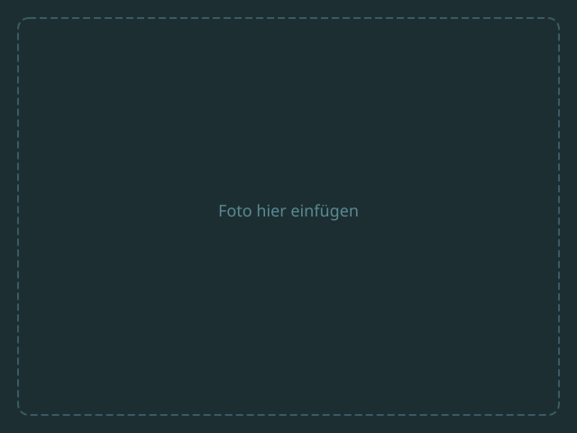

Drei Schritte.
Lückenlose Dokumentation.
Vom Einbau bis zur rechtssicheren Freigabe – alles digital nachvollziehbar.
Sensor wird eingebaut
Der 50×50×120 mm Sensor wird beim Estricheinbau direkt eingesetzt. Er steht zunächst ~60 mm über – und beginnt sofort mit der kontinuierlichen Feuchtemessung.
Der Sensor wird während des Estricheinbaus direkt in die frische Masse eingesetzt – ohne zusätzlichen Arbeitsschritt. Die kompakte Bauform (50×50×120 mm) passt in jeden gängigen Estrichaufbau. Ab dem Moment der Platzierung beginnt die lückenlose, automatische Aufzeichnung der Restfeuchte. So entsteht von Anfang an eine vollständige Dokumentation – ganz ohne manuelles Zutun.


Überstand abschneiden
Nach dem Abbinden wird der überstehende Teil bündig mit dem Estrich abgeschnitten. Der Schutzdeckel wird aufgesetzt – keine Stolperkante, optisch unauffällig.
Sobald der Estrich ausgehärtet ist, wird der überstehende Teil des Sensors mit einer handelsüblichen Säge bündig abgeschnitten. Anschließend wird der mitgelieferte Schutzdeckel aufgesetzt. Das Ergebnis: eine ebene, stolperfreie Oberfläche, die optisch kaum auffällt. Der Sensor misst währenddessen im Inneren zuverlässig weiter.


Daten abrufen & Freigabe
Deckel ab, Sendeeinheit herausziehen – alle Messdaten sind lückenlos gespeichert. Der Freigabenachweis ist auf Knopfdruck verfügbar.
Zum Auslesen wird einfach der Schutzdeckel entfernt und die Sendeeinheit herausgezogen. Sämtliche Messwerte sind lückenlos im Sensor gespeichert und werden per App oder Auslesestation übertragen. Der rechtssichere Freigabenachweis – inklusive Temperatur- und Feuchteverlauf – steht sofort als PDF zur Verfügung. Kein Nachrechnen, kein Interpretationsspielraum.